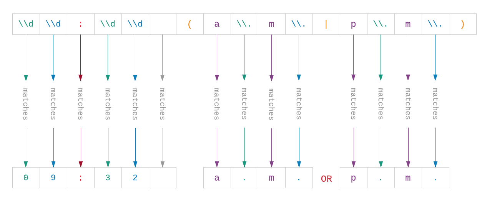
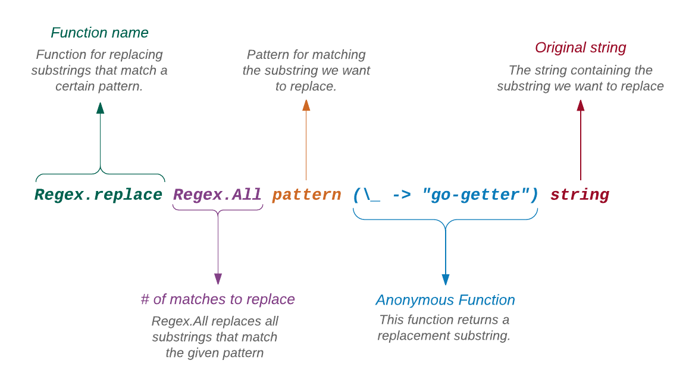

Zatím umíme vyjmout substring z řetězce určením jeho počátku a konce. Co když potřebujeme něco sofistikovanějšího? Řekněme, že chceme extrahovat časové údaje (09:32 a.m.) z informace o cestě Apolla 11:
On July 16, 1969, the massive Saturn V rocket lifted
off from NASA's Kennedy Space Center at 09:32 a.m. EDT.
Four days later, on July 20, Neil Armstrong and Buzz Aldrin
landed on the Moon.Je možné to provést s použitím funkcí pro řetězce ale je to rovněž úmorné. S regulárním výrazem (regular expression) to je procházka růžovým sadem, jakmile víme, jak na to.
> import Regex
> pattern = Regex.regex "\\d\\d:\\d\\d (a\\.m\\.|p\\.m\\.)"
{}
> string = """ \
| On July 16, 1969, the massive Saturn V rocket \
| lifted off from NASA's Kennedy Space Center at \
| 09:32 a.m. EDT. Four days later, on July 20, Neil \
| Armstrong and Buzz Aldrin landed on the Moon. \
| """
> Regex.contains pattern string
TrueRegulární výraz (regex) je vzor pro hledání shody s kombinací znaků v řetězci. Než se pokusíme porozumět výše uvedenému kódu, seznámíme se nejprve se základy regexu.
Pokud již víte, jak regulární výrazy pracují, můžete následující odstavec přeskočit.
Základy regulárních výrazů
Shoda s jedním znakem
V regexu se písmena a čísla shodují samy se sebou. Na příkad, A se shoduje s A a 1 se shoduje s 1. Regex je 'case-sensitive'. Takže se A neshoduje s a.
Shoda s více znaky
Hledanou shodu s více znaky musíme deklarovat výpisem nebo opakováním znaků. AAA se bude shodovat se třemi Aza sebou a 123 se bude shodovat s číslem 123.
Tečka
Nespecifikovaný znak můžeme pro hledání shody nahradit tečkou: A... Jedna tečka zastupuje jeden znak, jímž může být písmeno, číslo či jiný specielní znak. Takže se A.. bude shodovat s AAA, ABB, ACC, ABC, atd. Bude se také shodovat s A12, A$3, A^%, atp. Interpunkční znaky jako . nám umožňují vytváření schematických vzorů místo explicitního určení všech znalů v substringu.
Interpunkční znaky mají v regexu speciální významy. Takže chceme-li hledat shodu pro literál tečky, musíme před ní napsat zpětné lomítko, které odpojí její speciální význam pro regex. Zde je několik příkladů pro shodu s literálovou (normální) tečkou.
-
\.se bude shodovat s literálem tečky. -
Dr\. Strangese bude shodovat s Dr. Strange. -
Kevin Malone, Esq\.se bude shodovat s Kevin Malone, Esq. -
7\.67se bude shodovat s 7.67
Shoda se sadou
Zatím jsme se zaměřili na vyhledávání shody s konkretním znakem. Co když potřebujeme nalézt shodu se znaky určitého druhu, například s číslicemi? Pro tento účel můžeme použít sadu (set). Sadu vytvoříme uzavřením znaků do hranatých závorek. Zde je několik příkladů:
-
[0123456789]se bude shodovat s jednou číslicí. -
[aeiouy]se bude shodovat s jednou 'lowercase' samohláskou. -
[AEIOUY]se bude shodovat s jednou 'uppercase' samohláskou.
Je důležité poznamenat, že sada nabídne shodu pouze s jedním znakem. Na příklad [Pp] se bude shodovat s jediným znakem (buď P nebo p), nikoliv PP, pp nebo Pp. Chceme-li shodu s více znaky, můžeme sadu opakovat, například takto: [Pp][Pp], což pokryje všechny tyto kombinace: PP, Pp, pp, pP.
Jedním z příčin všestranné účinnosti regexu je možnost vytvářet složitější a složitější vzory postupným skládáním různých druhů výrazů.
Použití intervalů k vytváření výstižnějších sad
Sety se nesnadno rozšiřují. Chceme-li například hledat shodu pro dvě 'lowercase' písmena, musíme použít tento vzor: [abcdefghijklmnopqrstuvwxyz][abcdefghijklmnopqrstuvwxyz]. Bůů. V těchto případech jsou vhodné intervaly (ranges). Místo vypisování každého prvku sady, prostě definujeme interval. Uvedený super dlouhý regex můžeme nahradit intervaly takto: [a-z][a-z].
Podobně se bude [0-9] shodovat s každou číslicí. A [A-Za-z0-9_] se bude shodovat s kterýmkoli znakem slova (písmeno, číslo nebo podtržítko). Protože se některé sady znaků používají často, disponuje regex zkratkami, které je reprezentují. Zde je několik příkladů:
-
\dse bude shodovat s každou číslicí. Je to zkratka pro[0-9]. -
\wse bude shodovat s každým znakem slova. Je to zkratka pro[A-Za-z0-9_]. -
\sse bude shodovat s každou mezerou. Je to zkratka pro[\t\r\n\f]. -
\s\dse bude shodovat s mezerou před číslicí. -
[\da-f]se bude shodovat s hexadecimální číslicí. Je to zkratka pro[0-9a-f]. Zde jsme kombinovali zkratku s intervalem. Výrazy můžeme skládat dle libosti.
Shoda s alternativami
Někdy potřebujeme nalézt shodu s jednou z alternativ. Používáme k tomu svislé dělítko (pipe). Zde je několik příkladů:
-
X|Yse bude shodovat buď sXnebo sY -
EST|PSTse bude shodovat buď sESTnebo sPST -
Jim|Pamse bude shodovat se jménem jednoho ze dvou nejětších výtečníků,JimemneboPamem -
am|a\.m\.|pm|p\.m\.se bude shodovat samnebo sa.m.nebo spmnebo sp.m. -
[0-9]|[a-zA-Z]se bude shodovat s číslicí nebo s písmenem
Shoda se znaky s hvězdičkou
Hvězdička (*) je patrně nejpůsobivější znak v regexu. Má speciální význam, stejně jako tečka. Vyhledává shodu pro nula či více znaků před hvězdičkou. Viz příklady:
-
a*se bude shodovat sa. Bude se také shodovat saaneboaaaneboaaaaneboaaaaaatd atp. Kromě znakůasea*bude shodovat i s prázdným stringem. -
ab*se bude shodovat sa,ab,abb,abbb,abbbb, etc.
Hvězdička nemusí být na konci. Můžme ji vložit kam chceme.
-
a*bse bude shodovat sb,ab,aab,aaab,aaaab, etc. -
Cree*dse bude shodovat sCreed,Creeed,Creeeed,Creeeeed, etc.
Nemůžeme ji však dát na začátek, protože by potom nebylo co opakovat. Protože regex neklade řádná omezení na spojování výrazů, můžeme použít * sady nebo intervaly jako zde:
-
[0-9]*se bude shodovat s libovolným počtem číslic -
[a-z]*se bude shodovat s libovolným počtem malých písmen -
[a-zA-Z0-9_]*se bude shodovat s libovolným počtem číslic a alfanumerických znaků (písmeno, číslice nebo podtržítko = znaky slov)
Můžeme dokonce kombinovat * se speciálními zkratkami, jako zde:
-
\d*se bude shodovat s libovolným počtem číslic -
\w*se bude shodovat s libovolným počtem znaků slov -
\s*se bude shodovat s libovolným počtem mezer
Matka všech regexů
Vzpomeňte si, jak jsem říkal že * je patrně nejpůsobivější znak v regexu. Je pro to důvod. Spojíme-li ji s tečkou, vytvoříme "matku všech regexů": .*. Toto označení se bude shodovat s libovolným počtem libovolného znaku. Vpodstatě se bude shodovat se vším. Je to proto, že tečka se shoduje s jedním znakem (nezávisle na tom, o jaký znak se jedná) a hvězdička se shoduje s libovolným počtem znaků, reprezentovaných tečkou. Když se shoduje se vším, jak to může být užitečné? Podívejme se na několik příkladů:
-
.*Kramerse bude shodovat se jménem každého, jehož poslední jméno je Kramer. -
Cosmo.*se bude shodovat se jménem každého, jehož první jméno je Cosmo. -
.*Sacamano.*se bude shodovat se jménem, které obsahuje skupinu písmen Sacamano.
To by mohlo jako úvod do základů regulárních výrazů prozatím stačit. Reguárních výrazů je velmi mnoho. Na toto téma bylo napsáno mnoho knih. Existuje také řada online nástrojů pro building and testing complex regexes.
Regulární výrazy v Elmu
Nyní, když máme základy regulárních výrazů za sebou, můžeme porozumět významu slovutného vzoru, který jsme napsali pro vynětí času vypuštění Apolla 11 na počátku této kapitoly. Zde je text onoho kódu:
> import Regex
> pattern = Regex.regex "\\d\\d:\\d\\d (a\\.m\\.|p\\.m\\.)"
{}
> string = """ \
| On July 16, 1969, the massive Saturn V rocket \
| lifted off from NASA's Kennedy Space Center at \
| 09:32 a.m. EDT. Four days later, on July 20, Neil \
| Armstrong and Buzz Aldrin landed on the Moon. \
| """
> Regex.contains pattern string
TrueZačínáme importem modulu Regex, který stejně jako modul String obsahuje Elm Platform ale nenačte se do replu automaticky. Pro zbytek příkladů v této sekci budeme předpokládat, že je modul Regex již importován.
Dále používáme funkci regex k definování vzoru, který se má shodovat s časem (09:32 a.m.), který hledáme. Řetězec, v němž je časový údaj obsažen je definován jako víceřádkový. Na konci používáme funkci contains z modulu Regex (nikoliv z modulu String) ke zjištění, zda se nějaký substring shoduje s naším vzorem.
To je podruhé, co se setkáváme se dvěma funkcemi stejného jména z různých modulů, což je v Elmu docela běžné. Kromě sdružování podobných funkcí, slouží moduly také jako jmenné prostory. Proto String.contains a Regex.contains jsou dvě zcela rozdílné funkce.
Vzor, který jsme použili jako argument funkce regex působí poněkud chaotickým dojmem, není-liž pravda? Když jsme se učili základy regulárních výrazů v předchozí sekci, používali jsme jeden znak \ buď jako speciální zkratku nebo pro odsazení tečky: \d a \.. Nač tedy potřebujeme dvě zpětná lomítka v kódu Elmu?
Je to proto, že \ má v Elmu speciální účel - odznačit (escape) jiné znaky. Když jej umístíme před jiný znak, odnímáme jeho speciální význam a stává se obyčejným znakem. Vzmpomeňte si, jak jsme v odstavci Řetězce - Víceřádkové řetězce, když jsme použali dvojité uvozovky uvnitř jednořadkového řetězce, museli jsme je odznačit jako zde abychom řetězec neukončili předčasně: "Michael Scott's Rabies Awareness \"Fun Run\" Race for the Cure". Chcete-li použít literálový znak \, musíte jej odznačit stejně jako uvozovky. Uveďte dvě lomítka \\ za sebou a Elm pochopí, že chcete použít literál \. Použijete-li jenom jedno lomítko \, Elm jej pochopí jako signál k odebrání speciálního významu u následného znaku.

Vyjmutí substringu
Rozhodli jsme se extrahovat substring 09:32 a.m. ale všechno, co jsme dosud udělali bylo to, že jsme si ověřili, že tento substring existuje. K vyjmutí použijeme funkci Regex.find, která je mnohem účinnější než funkce slice z modulu String. Funkce find přijímá tři parametry:
-
počet výskytů substringu, které chceme nalézt. Na příklad,
Allvyhledá všechny výskyty, zatímcoAtmost 2vyhledá nejvíce dva výskyty, -
vzor regulárního výrazu, reprezentující substring,
-
prohledávaný řetězec.
Použijme funkci find k vyhledání shody s 09:32 a.m.
> launchTimes = Regex.find (Regex.AtMost 1) pattern string
[{ match = "09:32 a.m.", submatches = [Just "a.m."], index = 97, number = 1 }]Výstup je poněkud nepřehledný. Dovolte mi jej přeformátovat do přehlednějšího tvaru.
[
{ match = "09:32 a.m.",
submatches = [Just "a.m."],
index = 97,
number = 1
}
]Funkce find nevrací jenom hledaný substring. Obsahuje také výpis informací o shodě.
Pro tuto chvíli považujete 'record' za kolekci párů key/value. Podrobněji se tím budeme zabývat v sekci Record.
Jak výstup nahoře ukazuje, funkce find vrací čtyři údaje o každé shodě, kterou nalezla:
-
Hledaný substring.
-
Subshody - funkce
findtaké hledá substringy, které se shodují s každým subvzorem, obsaženým ve vlastním vzoru. V našem případě se substring "a.m." shoduje se subvzorem(a\\.m\\.|p\\.m\\.). Všechny subshody jsou přiřazeny k parametruJust, o němž pojednáme později. Příklady v této sekci subshody nepoužívají, takže je můžeme prozatím bezpečně ignorovat. -
Index substringu v původním řetězci.
-
Vyhledá-li
findvíce substringů, označí každou shodu přadovým číslem, začínajícím od jedničky. První shoda je označena číslem1, druhá číslem2, atd atp. Tato čísla budou důležitá při pozdějším nahrazování všech výskytů substringu.
Jsme už jen jeden krok od vynětí našeho potměšilého substringového přítele. Potřebujeme jenom zjistit, jak se dostat ke klíči match uvnitř záznamu. Použijeme k tomu funkci zvanou List.map.
> List.map (\launchTime -> launchTime.match) launchTimes
["09:32 a.m."]Konečně máme náš substring. Je sice stále uzavřen v seznamu, o němž si budeme povídat v sekci List.
- List.map
List.mapvytváří nový seznam, jehož elementy tvoří výsledky aplikace poskytnuté funkce na každý element seznamu původního. FunkciString.filterv předchozím odstavci jsme poskytli anonymní funkci, která čte hodnotu, uloženou v klíčimatch.
Nalezení vícerých výskytů substringu
Vezměme si příklad řetězce s vícerými výskyty hledaného substringu.
> pattern = Regex.regex "quitter"
{}
> string = """ \
| I'm a great quitter. It's one of the few things \
| I do well. I come from a long line of quitters. \
| My father was a quitter, my grandfather was a \
| quitter... I was raised to give up. \
| """
> Regex.find Regex.All pattern string
...Zde je výstup po menším formátování:
[
{ match = "quitter",
submatches = [],
index = 14,
number = 1
},
{ match = "quitter",
submatches = [],
index = 89,
number = 2
},
{ match = "quitter",
submatches = [],
index = 116,
number = 3
},
{ match = "quitter",
submatches = [],
index = 147,
number = 4
}
]Tentokrát jsme zadali Regex.All jako první argument funkci find, protože hledáme všechny výskyty substringu "quitter". Byly nalezeny čtyři. Všimněte si, jak se postupně u každé shody zvětšuje číslo u parametru number.
Nahrazení substringu
I když se George rád chvástá, jaký je vynikající "quitter", udělejme z něj pro jednou "go-getter". Nahradíme všechny výskyty slova "quitter" slovem "go-getter". K tomu účelu použijeme funkci replace.
> Regex.replace Regex.All pattern (\_ -> "go-getter") string
...Po menším formátování vypadá výstup takto:
"I'm a great go-getter. It's one of the few things
I do well. I come form a long line of go-getters.
My father was a go-getter, my grandfather was a
go-getter... I was raised to give up."Odstranil jsem znaky \n a přebytečné mezery aby měl text lepší úpravu. Také na začátku výsledného řetězce uvidíte extra mezeru a znak \n. To proto, že když jsme definovali konstantu string s víceřádkovou syntaxí, použili jsme mezeru a znak \n aby kód působil úpravněji.
> string = """ \
| I'm a great quitter. It's one of the few things \
...Mohli jsme stejně dobře začít náš řetězec na prvním řádku takto:
> string = """I'm a great quitter. It's one of the few things \
...Funkce replace přijímá čtyři argumenty:
-
Kolik shod nahradit. My jsme zadali
Regex.All, protože jsme chtěli nahradit všechny výskyty substringu "quitter". Kdybychom chtěli nahradit jenom první výskyt, zadali bychom(Regex.AtMost 1). -
Vzor pro shodu se substringem, který chceme nahradit.
-
Funkci, která přijímá jako argument shodný substring a vrací alternativu. Všimněte si, že jsme v anonymní funkci místo názvu parametru použili podtržítko
_. Protože naše funkce jednoduše vrací úplně nový substring ("go-getter") a nesnaží se nijak měnit původní substring ("quitter"), nezajímá nás, co je naši funkci zadáváno. Použitím_vpodstatě tento argument ignorujeme. -
Původní řetězec se substringy, které chceme nahradit.

Štěpení řetězce
Již víme, jak rozdělit řetězec použitím funkce String.split. Tato funkce je však omezena na štěpení řetězce na základě separátoru. Co když chceme rozdělit řetězec s použitím složitého vzoru? Například, následující řetězec obsahuje dvě instance času: 09:32 a 10:56
> string = """On July 16, 1969, the massive Saturn \
| V rocket lifted off from NASA's Kennedy Space Center \
| at 09:32 a.m. EDT. Four days later, on July 20 at \
| 10:56 p.m. EDT, Neil Armstrong and Buzz Aldrin landed \
| on the Moon. \
| """Řekněme, že jej chceme rozdělit na tři substringy přesně tam, kde se vyskytují časové údaje:
"On July 16, 1969, the massive Saturn V rocket lifted
off from NASA's Kennedy Space Center at ",
" a.m. EDT. Four days later, on July 20 at",
" p.m. EDT, Neil Armstrong and Buzz Aldrin landed on the Moon."Nevím, proč bychom měli chtít rozdělit řetězec zrovna uvedeným způsobem ale v tom případě budeme potřebovat něco flexibilnějšího než funkci String.split. Jak se ukazuje, poskytuje modul Regex také funkci split, která pro rozdělení řetězce na substringy používá regexový 'vzor'.
> pattern = Regex.regex "\\d\\d:\\d\\d"
{}
> Regex.split Regex.All pattern string
...Zde je mírně formátovaný výstup:
[
"On July 16, 1969, the massive Saturn \nV rocket lifted off from NASA's Kennedy Space Center \nat ",
" a.m. EDT. Four days later, on July 20 at \n",
" p.m. EDT, Neil Armstrong and Buzz Aldrin landed \non the Moon. \n"
]Zrušení case-sensitivity
Regulární výrazy jsou implicitně case-sensitive. Zde je příklad:
> pattern = Regex.regex "phoenix"
{}
> Regex.contains pattern "I'm like the Phoenix, rising from Arizona."
FalseToto chování můžeme vypnout funkcí caseInsensitive:
> pattern = Regex.caseInsensitive (Regex.regex "phoenix")
{}
> Regex.contains pattern "I'm like the Phoenix, rising from Arizona."
TrueHovořili jsme téměř o všem v modulu Regex. Úplnou dokumentaci k tématu naleznete zde.